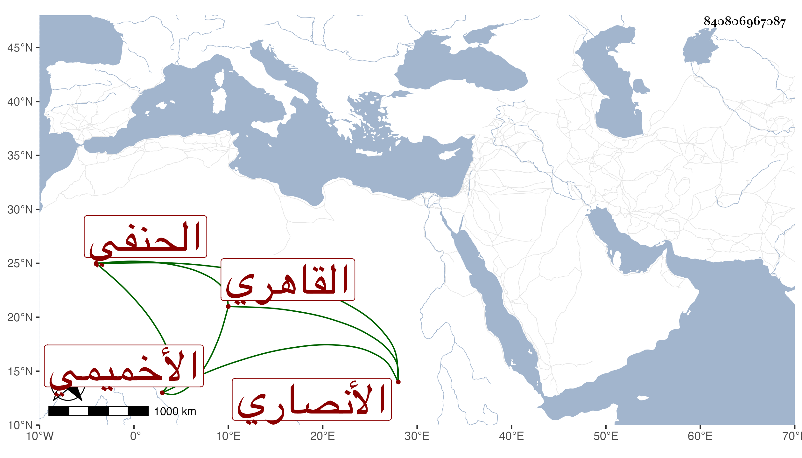

0902Sakhawi.DawLamic.ITO20230111-ara1.EIS1600.840806967087
Biography ID: 840806967087
263
أحمد بن محمد بن أحمد بن محمد بن محمد بن عبد الوهاب بن البهاء الشهاب ابن العدل الشمس الأنصاري الأخميمي القاهري الحنفي والد الناصري محمد وعلي الآتيين وجدهما في محالهم . ولد وقرأ القرآن على رفيق والده الفقيه خليل الحسيني وتلا به علي وأم بالظاهر جقمق وهو أمير فلما تسلطن استقر به ، وكان خيرا . مات في يوم السبت تاسع عشري شعبان سنة ثلاث وستين رحمه الله .
